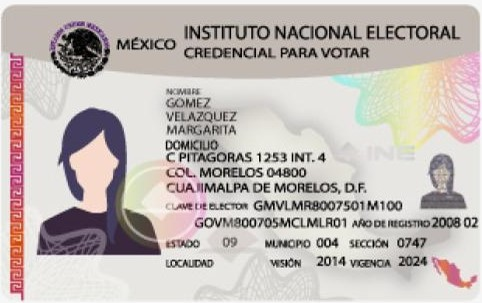
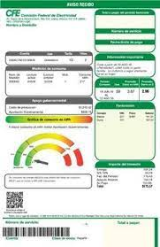

Sector Salud
Préstamos para trabajadores del IMSS y de la Secretaría de Salud
Si perteneces al grupo de trabajadores de los servicios de salud pública del Estado de Michoacán, o bien eres empleado activo del IMSS o de confianza, Estatuto A y Nómina de mando de la dependencia de IMSS No Paritaria, eres candidato ideal para uno de nuestros préstamos personales.
Sector Gobierno
Créditos para empleados de gobierno
La solución financiera para trabajadores del gobierno federal. Si eres trabajador del gobierno, eres candidato ideal para uno de nuestros créditos.
Sector Pensionados/Jubilados
Préstamos a jubilados y pensionados sin importar tu buró de crédito
Si eres jubilado o pensionado del IMSS, o bien eres ex trabajador de la iniciativa privada y recibes tu pensión a través del IMSS, puedes solicitar uno de nuestros apoyos económicos para cumplir tus sueños y necesidades. Lo mejor es que nuestros trámites son sencillos, rápidos y confiables.
Documentos necesarios para solicitar tu préstamo
Identificación Oficial
Asegúrate de que se encuentre vigente
Comprobante de domicilio
Vigencia de tres meses.
Comprobante de ingresos

Vigencia de un mes.
Búscanos en
Siervo de la Nación #1264-B. Fraccionamiento Libertad. Morelia, Mich. Télefono (443) 427 1209